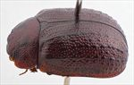
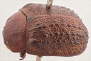
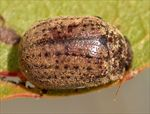
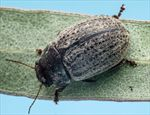
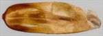
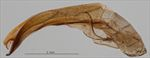
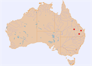

Click on images to enlarge
{kind=link}

Female, Carnarvon N.P., Mt Moffat Section, Queensland
![Male, Nipping Gully, Queensland [QM]](assets/image/Ta144/Ta144_AGM-143_SM.jpg){kind=link}

Male, Nipping Gully, Queensland [QM]
{kind=link}

Female, Carnarvon N.P., Mt Moffat Section, Queensland
{kind=link}

Female, Tara, S.E. Queensland
{kind=link}

Aedeagus, dorsal view (Nipping Gully, Queensland)
{kind=link}

Aedeagus, lateral view (Nipping Gully, Queensland)
{kind=link}

Distribution
Name
Trachymela sp. Ta144
Reference specimen
2005-103, Carnarvon N.P., Mt Moffat Section, Queensland.
Adult Description
Length: ♀ 7.6-8.2 mm [6], ♂ 7.9 mm [1].
Colour: head: uniformly dark-brown, fronto-clypeal suture sometimes narrowly black laterally, labrum usually paler brown, base and tips of mandibles black; antennomeres 1-6 mid-brown, 7-11 grading from light-brown to darker brown, often with the darker colour confined to distal half of segments; pronotum: dark-brown, same shade as head, sometimes with a darker, longitudinal patch, variable in size, on either side of discal area, its outside edge lining up with inside edge of eye, a small round, elevated darker, rarely black, patch is usually present in centre of each foveal area, lateral edge and lateral parts of anterior edge darker brown or black; scutellum: dark brown, darker shade than adjacent region of pronotum, or black; elytra: dark-brown, same shade as pronotum, with 3-4 lines of relatively widely and evenly spaced black verrucae (VR3, VR5, VR7 and VR9, with verrucae in the latter confined to the posterior half of elytra), black verrucae in the even discal series are present but much more sparse, VR10 often in form of a continuous dark ridge from level of humeral callus to just past middle, becoming a series of closely spaced dark verrucae from there to apex; punctures same shade as interstices, humeral callus similar in shade or darker brown than ground, not black; venter: very dark brown or black, rarely with vaguely lighter-coloured margins on abdominal ventrites, epipleura usually dark-brown, sometimes with some black, rarely wholly black. Cuticular wax: light-brown and almost uniformly distributed between the black longitudinal lines of verrucae, enhancing the insects striped appearance.
Shape: rather flattened over much of central section of insect, highest point at or behind middle of elytral margin, ventrites may project a considerable distance below elytral epipleurae. Head; punctures quite variable in size (pd~1.5-2.5xef) and slightly unevenly but moderately densely distributed. Antennae moderate in length (AL ♂=40.6%BL, ♀=34-36%BL), filiform. Pronotum; evenly curved transversely over discal region, only extreme lateral margins slightly to quite strongly explanate, with whole foveal area slightly elevated and with a rounded, more weakly punctured elevation near its lateral edge, puncturation clearly impressed, evenly and moderately densely distributed in discal area with a mix of large and much smaller puncture sizes present, the larger similar in size or fractionally larger than those on head, becoming much coarser at lateral margins. Front margins join the slightly thinner lateral margins in a smoothly rounded right-angle, with lateral margin straight for a short distance before curving smoothly and gradually and increasing in thickness towards rear margin. Scutellum; smooth or slightly rugulose and lightly scattered with fine to more coarse punctures. Elytra; surface noticeably flattened around highest point, curvature then increases considerably towards apex, with dorsal surface joining ventral at about 90⁰, punctures evenly distributed, large and distinct throughout, with interstices quite flat and smooth, with very fine punctures scattered throughout on the interstices, rows of evenly spaced dark verrucae as described in “colour” section, with rows of widely separated small verrucae in intervening rows, posterior third of elytral suture slightly carinate, surface slightly discontinuous under humeral callus, lateral margins markedly sinuous; vertical extension of epipleura slight (HCE/PW=0.29-0.31). Venter; Prosternal process narrowed very slightly anteriorly, sometimes almost parallel-sided, open anteriorly, a few short setae present at rear of prosternal process and sometimes very sparsely on mesosternum, a single seta on anterior and median trochanter; front edge of metasternum beveled, truncate; inner edge of posterior of epipleurae lacking setae. Aedeagus; [only a single, somewhat distorted example from a very teneral specimen is available] relatively short (LPE=33%BL), in dorsal view, sides either almost parallel-sided or widest near middle, ostial oval in shape, moderately large, with long dorsal ostial processes that together are narrower than ostium and extend forward almost to apex, spatula well-developed terminating in a flat apex; in lateral view, bent at about 130̊ near junction of basal and middle section, then approximately straight for about 60% of distance to apex, where there is a gradual downward bend of about 135◦, tip deflexed.Larvae
unknown.
Eggs
unknown.
Similar species
Ta37 – this species from S.E. Queensland and N.E. New South Wales is very similar in its size and narrow form but differs by the rows of verrucae being in the form of almost uninterrupted longitudinal ridges. The aedeagus differs from that of Ta144 in having a triangular apex.
Ta241 – overlaps in distribution with Ta37, but is a larger species, with the size distributions overlapping only slightly. The arrangement of verrucae on the elytra is very similar in the two species, but Ta241 is usually much darker (often completely black). The aedeagus is quite different between the species, with that of Ta241 having a very large ostial opening, short dorsal ostial processes and a triangular apex.Notes
Ta144 has been collected from Eucalyptus conica (Symphyomyrtus: Adnataria). A single female from Tara, S.E. Queensland, is similar in most respects to typical specimens from the Carnarvon area but is darker dorsally. It was found on an unidentified ironbark species (also Adnataria).
The single male available for study and tentatively assigned to this species was collected from a more easterly area (Nipping Gully, near Mundubbera, Queensland, QM) and is somewhat different to the Carnarvon area specimens that form the bulk of individuals examined. Its verrucae, although in series very similar to those of typical specimens of Ta144, tend to be larger and more elevated and its scutellum is completely smooth and unpunctured. This specimen is very teneral, which makes colouration an unreliable character, but it is clear that at least the posterior 2/3 of the epipleura are black. Due to the teneral state, the dissected aedeagus is somewhat distorted, but its apical region is sufficiently sclerotized to be able to reliably determine its shape.Copyright © 2026. All rights reserved.